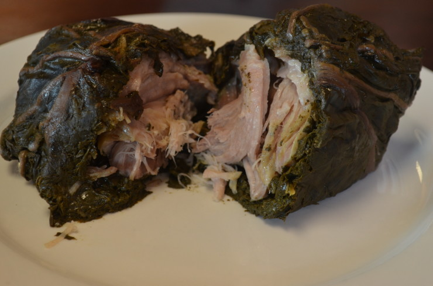

HOME
Pork Lau Lau

This is so good, especially with some butterfish. It's salty and tender, and the tarot lea is so yummy if you wrap your lau lau tight with a thick layer of the taro leaf.
Ingredients:
- Pork butt
- Luau (Taro) Leaves
- Hawaiian Sea Salt
- Ti Leaves or Foil
- Water
- Butterfish
Preparation:
- Cut the Pork Butt into 1/2 lb chunks and season well with Hawaiian Sea Salt.
- De-stem the Luau Leaves, clean them, and rinse them.
- Wrap the seasoned Pork Butt chunks and the Butterfish with a stack of the cleaned Luau Leaves and wrap tightly in foil or Ti Leaves.
- In the pressure cooker, line the bottom with several balls of foil so that the foil wrapped Lau Laus won't touch bottom of the cooker.
- Fill pressure cooker with Water about 1/3 full and place your wrapped Lau Laus in.
- Cover pressure cooker with regulator attached and place it on the stove.
- Once pressure cooker sputters, Lau Laus will be ready in 90 minutes.